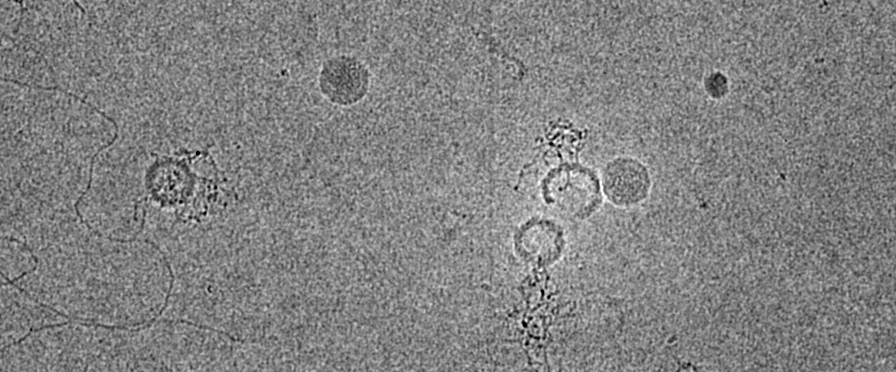
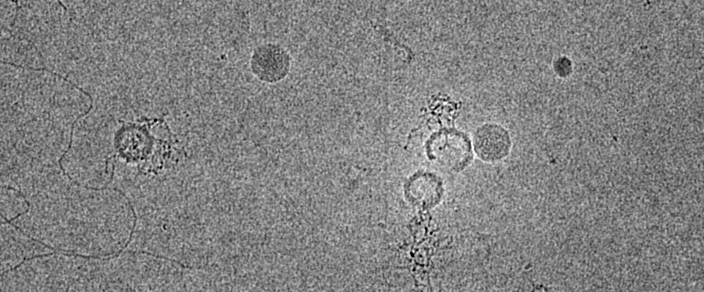

Currently I am a Bioinformatics Specialist at DataTecnica,
providing fastq to dimensionality reduction to downstream analysis of neurodegeneration
in large-scale (>100 sample, >500k nuclei/cell) single-cell multiome atlases.
I earned my Ph.D. in Biophysics from the Andino lab at UCSF. As a postdoc in Dolan lab I worked with Enterovirus D68, studying how the adaptations from evolutionary pathways manifest as physical mechanisms, as well as biophysical selection by deep mutational scanning.
Images shown are generated for present and past projects.
 
